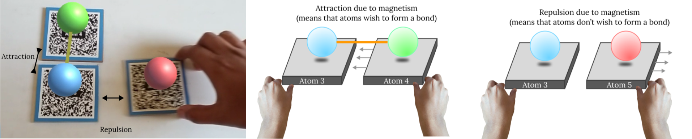

Attraction and repulsion of atoms to form bonds or not using AR markers
Description:
Here we have 3 atom markers of which 1 is primary and others are secondary. When a secondary atom
marker is brought near
primary atom marker and they are compatible to form a bond, they attract else they repel.
Created by: Anurag Kumar Singh
Email: anurag27k@gmail.com
Date created: 27 May 2022
Version: 1.0
Created by: Anurag Kumar Singh
Email: anurag27k@gmail.com
Date created: 27 May 2022
Version: 1.0
Code files:
Prototype3.cs ↓
Other files:
QR26-28 markers ↓
Prerequisites:
How to Create Image Targets: YouTube Link 🔗
Steps:
1. Add the below markers in the Assets folder:
- Atom3(QR26)
- Atom4(QR27)
- Atom5(QR28)

2. Create 3 Image Targets : Vuforia Engine>Image Target

3. Add a sphere under Atom3, Atom4 and Atom5 markers

4. Create a new material in Assets folder

5. Add material to the spheres created
6. Resize the spheres

7. Add capsule collider to the Atom3 and Atom4 and adjust values

8. Add the script Prototype3.cs (mentioned above) to the assets folder
9. Drag the script to the sphere in Atom3 marker
10. Press Play and it should work!
Some atoms do not interact with each other whereas others do. Here we have 1 parent marker which has a blue atom. There are two other markers which have Red and Green atoms. When the blue atom marker is brought closer to the green atom marker the marker gets attracted due to magnetic force. On the other hand when the marker with the red atom is brought closer to the blue marker,the atom repels and which shows that the bond is not possible in this scenario.

In the above feature we have observed the interactions:
- Magnetic pull of markers which function together (in this scenario, form a bond)
- Repulsion of markers which don't have any function together.
Created by:
Anurag Kumar Singh
anurag27k@gmail.com
Chennai, India